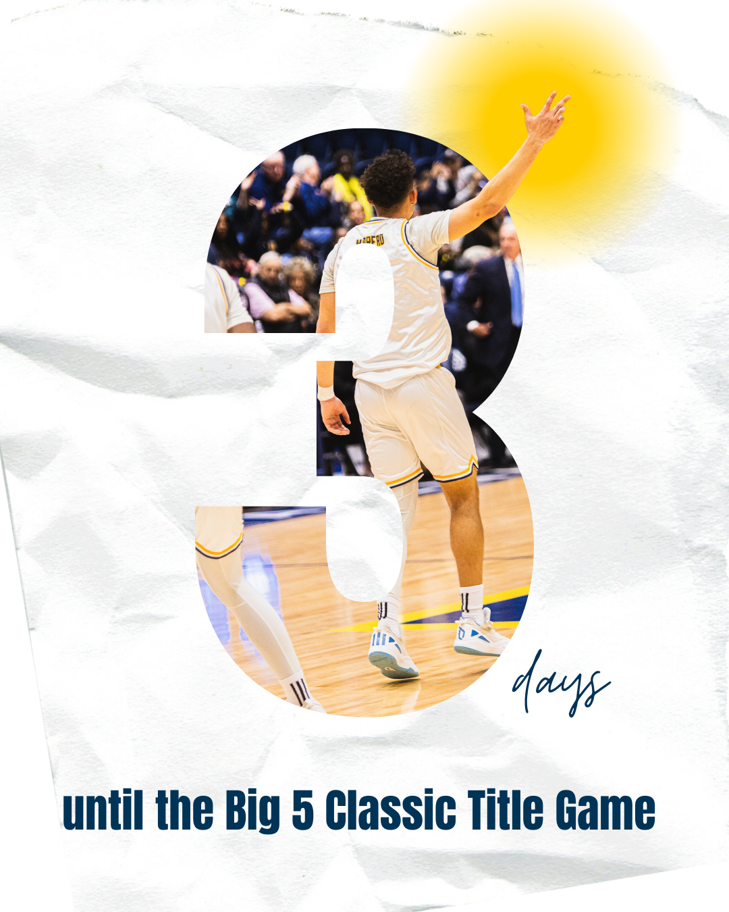

Social Media
My social media work focuses on creating engaging, on-brand content that builds community and drives interaction. From promoting a local business to energizing LaSalle’s student section, I’ve developed strategies and visuals that capture attention and reflect each group’s unique voice.

Olney Outlaws

